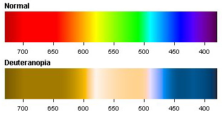
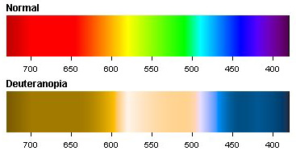

My oldest son is color blind and cannot see red and green the way I can. I saw this picture last night and about started bawling after seeing what he cannot see.
Who else sees these two basically the same?


My oldest son is color blind and cannot see red and green the way I can. I saw this picture last night and about started bawling after seeing what he cannot see.
Who else sees these two basically the same?

I can see the difference between them, but I am definitely color deficient.
I can’t tell most reds from greens, green and brown are different shades of the same color, blue and purple are the same deal, some reds and browns, most greens and yellows…
wow. How do you function?! Or are they simply lighter shades that are hard to tell when side by side?
I can see the differences pretty well. I’m apparently not color blind by any means.
Oh, and orange is just a mess to me. I don’t know how I function, actually. It all looks like shades to me. Red and green next to each other? I can see that they are different, but I can only tell that one is darker than the other. Same with all the other combinations I mentioned.
When playing poker it can get really confusing. I’m constantly asking what a bet was if there are mixed red and green chips.
Stoplights? Red, Orange, Off-White. If they weren’t all in the same order, I would probably have trouble.
I’m such a mess 
My uncle is color blind.
And my dog.
I got issues when there are different tones of green, but that’s about it.
My favorite colour is green, and I’d hate to lose my colour-seeing skeelz.
Yeah I dont “tink” it works like that.
But actually hhow does colour blindness work, because my friend is colour blind, and I never really understood.
I guess I have a rare green blue deficiency. It’s been 10 years or so since I’ve been to an eye doctor though, so I couldn’t tell you much about it. Though I recall hearing that compared to women, most males have less colour sensitivity in their vision. I heard women don’t suffer from colour blindness exempting rare cases…take that for the second hand info again though…
I’ve read that dogs can see some colors, like easily recognizable colors such as yellow and blue, but not all colors.
I kinda know someone that can see only in greyscale.
I’m definitely colorblind, green/yellow and blue/purple look confusingly similar to me. And I’m a professional artist, somehow.
As far as I know, color blindness is caused by mutations of the X chromosome; women don’t suffer from colour blindness so frequently because both of their chromosomes have to have this problem, while men only need one to be “infected”.
You sound like my old Biology teacher. I miss Biology.
My science teacher sees in greyscale. Every time he sets up an experiment with markers related to color, he needs someone to help him differentiate. This made it especially difficult for him to teach us about the physics of the light spectrum 
Other than that, I don’t know anyone else who’s even partially color blind, but I remember my 7th grade science teacher saying that color blindness is in most cases found only in the Y gene so that’s why usually only men are affected by it.
You know what I discovered about people who are colorblind? To them, a bright blue sky is gray. Imagine how incredibly depressing that would be, for the sky to always be gray.
not true, in my case at least.
okay so maybe someone i know who is colorblind only sees the sky in gray. so MAYBE i instantly assumed all colorblind people are like that.
yeah. thats right. i’m colorblind-ist. fuck you. :3
hu hu hu :retard:
Or maybe he’s bullshitting you. Nah, I don’t know, but it should be obvious to everybody from the first post in this thread that there are different forms of colorblindness involving different parts of the spectrum.
Founded in 2004, Leakfree.org became one of the first online communities dedicated to Valve’s Source engine development. It is more famously known for the formation of Black Mesa: Source under the 'Leakfree Modification Team' handle in September 2004.